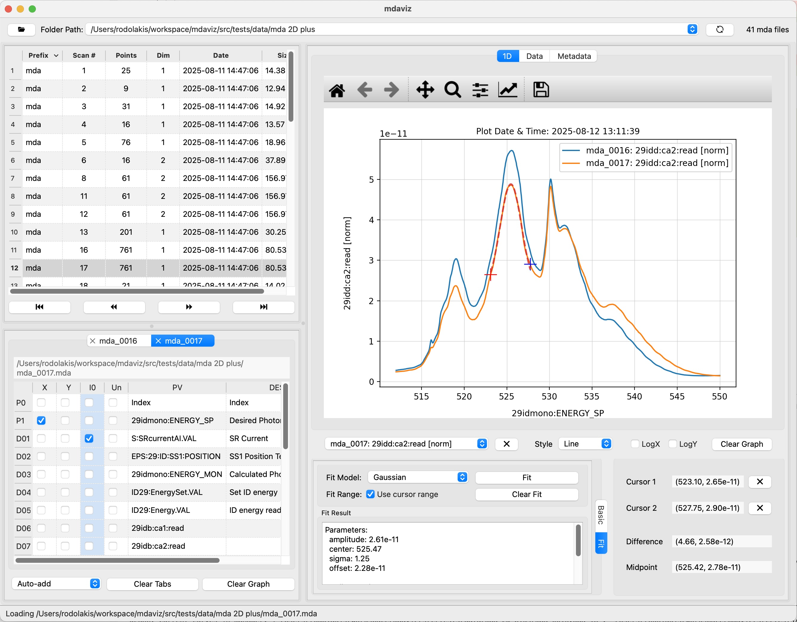
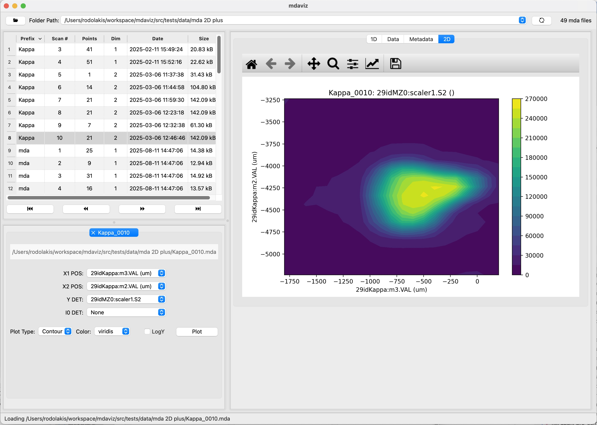

mdaviz: MDA Data Viewer#
A Python Qt6 application for visualizing MDA (Multi-Dimensional Array) data.
Key Features#
Data Visualization: Visualize MDA data with support for 1-D and 2D plots (mesh scans) with matplotlib integration.
Auto-Load Folders: Automatically loads the first valid folder from recent folders list (can be disabled in the preferences).
Recent Folders: Remembers recently opened folders for quick access.
Lazy Loading: Efficient folder scanning with progress indicators for large datasets.
Curve Management: Add, remove, and style multiple data curves.
Axis Selection: Select X-axis (positioners), Y-axis (detectors), I0 normalization, and curve unscaling using checkboxes. Axis selection is saved from one file to the next.
Curve Unscaling: Rescale curves to match the range of other Y curves for better comparison.
Data Analysis: Basic statistics, cursor measurements, and curve fitting.
Metadata Search: Searchable metadata to quickly locate specific parameters and settings.
Cross-Platform: Runs on macOS, Windows and Linux.
Documentation#
Screenshots#


Screenshot of the mdaviz GUI displaying sample 1D data with curve fitting.#


Screenshot of the mdaviz GUI displaying sample 2D data.#
About#
- home:
- bug tracker:
- source:
- license:
- full version:
1.4.2
- published:
May 21, 2026
- revisions:
- index:
- module:
- search:
Acknowledgements#
“This product includes software produced by UChicago Argonne, LLC under Contract No. DE-AC02-06CH11357 with the Department of Energy.”